Summary: Client wanted to force DFS scanning to target servers in a specific geographic location, however StealthAUDIT often just grabs any available target path. This workflow allows SA to query customer environment for available target paths for a DFS share, and then overwrite our standard query's targets.
Issue: DFS Folder targets are picked indiscriminately, with no recourse for a user to override those targets. Examples include a target preference or a geographic preference by client.
Instructions: Out of the box, SA will query a DC for name spaces, folder targets, and paths for any given DFS setup. It will then pick one target indiscriminately amongst available target paths for a folder. However, there may be situations where a customer may wish to use a specific path, one that SA did not choose. (Similar to the way a customer may elect for a different DC than what the Dynamic Host List 'Default Domain Controller' chose.)
We'll use a single Namespace here, with two folders:
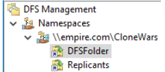
The two folders have multiple targets with full replication set up between them. (This PS
query will be turned into a job later.)
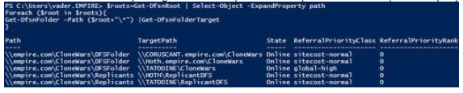
Without modification, here is the result within SA after running the
"0-FSDFS System Scans" job:
Two of the three hosts made it to the DFS Host List:
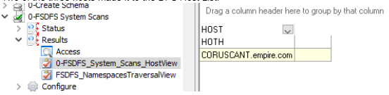
If we query the
[SA_FSDFS_Links]
table we can see some details of which paths were picked (some columns omitted for
space):
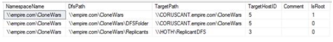
But take a look at the results of the PS query again. Notice in the
ReferralPriorityClass column that one of the targets for \DFSFolder has a value
of global-high. This is due to a DFS configuration option available to admins
that is not considered in our current target selection:
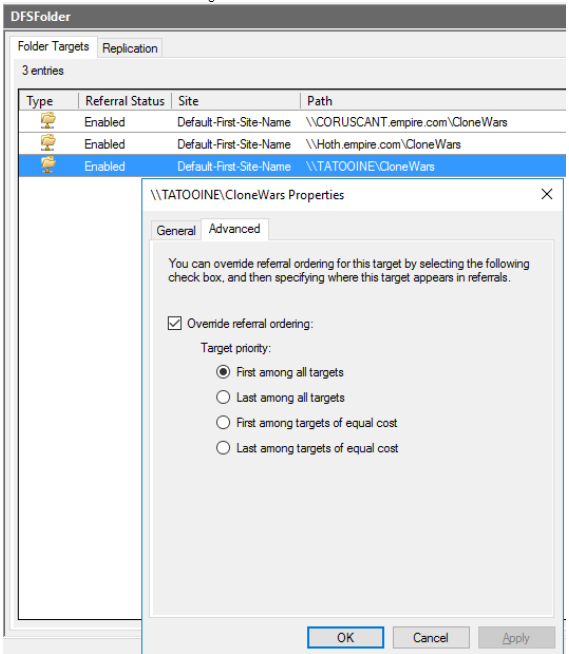
The host TATOOINE is not set to be scanned at all, as evident by its absence in our DFS
host list.
In order to override these targets, we will use PS to query all DFS folder target paths
into a table, and then insert them into the appropriate SA tables before the host lists
are created.
The first step is to create a job that will query and create our table of
possible targets. 1 query, No analysis or actions. Name something sensible, as you will
reference the _DEFAULT table later. Create a new query with the POWERSHELL data
collector, default settings for all config pages should be fine. Use the following for
the query:
$roots=Get-DfsnRoot | Select-Object -ExpandProperty path
foreach ($root in $roots){
Get-DfsnFolder -Path ($root+"\*") | Get-DfsnFolderTarget
}
Be sure to set a host, in most cases local host will
work fine. The results should be the same as above:
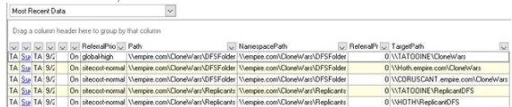
Next, create a new analysis inside of the "0-DFS System Scan" job. Name it something that
will catch the eye of future engineers as being custom work in an out-of-the-box solution
if possible. You must bring the new analysis to the top of the list; it
must run before the other two:
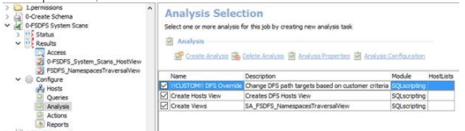
The analysis should be a simple update statement to the DF
UPDATE [dbo].[SA_FSDFS_Links]
SET [TargetPath] = o.[TargetPath]
FROM [dbo].[SA_FSDFS_Links] d
LEFT JOIN [dbo].[SA_DFS_Override_DEFAULT] o
ON LOWER(d.[DfsPath]) = LOWER(o.[Path])
AND/WHERE . . .
Here is where you must consider your customer's needs to complete the query. Maybe
the want to target the priority targets, maybe they want to avoid them. Maybe they
do not have priorities set at all but still want all scans on a specific Geographic
location. This, as well as the path names themselves will shape the rest of the
query.
You will also need to update the [TargetHostId] column with the correct ID for
changes made. These IDS can be found on the
[SA_FSAA_Hosts]
table. (If you are looking to include a host that is not currently there, it will need to
be added. A quick zero-level scan will add it as well as test connection/permissions.)
The following query should update any changes, but always double check:
UPDATE [dbo].[SA_FSDFS_Links]
SET [TargetHostID] = h.[ID]
FROM [dbo].[SA_FSDFS_Links] d
LEFT JOIN [dbo].[SA_FSAA_Hosts] h
ON h.[HOST] = SUBSTRING(d.[TargetPath],3,CHARINDEX('\',d.[TargetPath],3)-3)
WHERE [TargetHostID]
In our example, I am looking for a single change
where I have a global preference set. I have also chosen to surface the
[SA_FSDFS_Links] table here so that I can more easily reference the results:
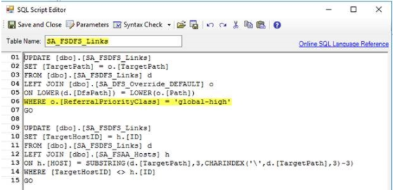
Running the "0-DFS System Scan" job again, we can then see our results:
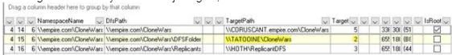
The 'DFSFolder' target now reflects the change, as does the host ID. Our DFS Host list
now contains 3 hosts, and when a scan is initiated against the host list it will scan
TATOOINE instead of CORUSCANT as it would have previously:
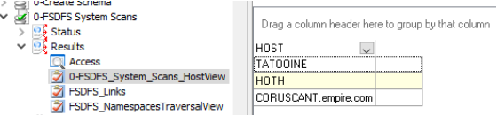
As an alternate example, HOTH is a geographic location known for ice storms
that lead to poor network connectivity. If the customer wished to avoid scanning HOTH,
and it is known that all DFS targets on HOTH are always replicated to TATOOINE, we may
craft our SQL statement differently:
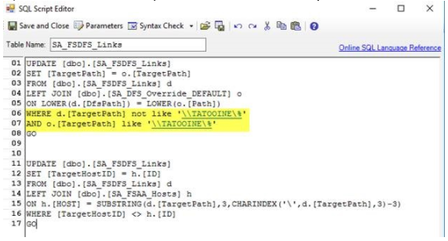
This will lead to a result as such:
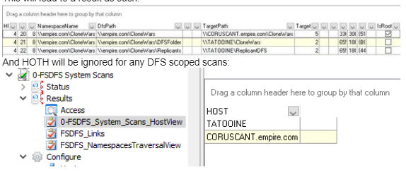
And HOTH will be ignored for any DFS scoped scans.
Product:
StealthAUDIT
Module: SA
- DC - FSAA - DFS
Versions:
8.1
Dev Ticket: Not
directly related, however DFS scoping must be fixed as per
https://na55.salesforce.com/500f100000jWiqE and subsequent article
https://na55.salesforce.com/kA0f1000000oNWT . Article should remain relevant after those
fixes are released.
Legacy Article ID:
2152